1. Download Kaggle Data
Log into Kaggle:
1. Competitions
2. Titanic
3. Data
4. Train.csv and Download
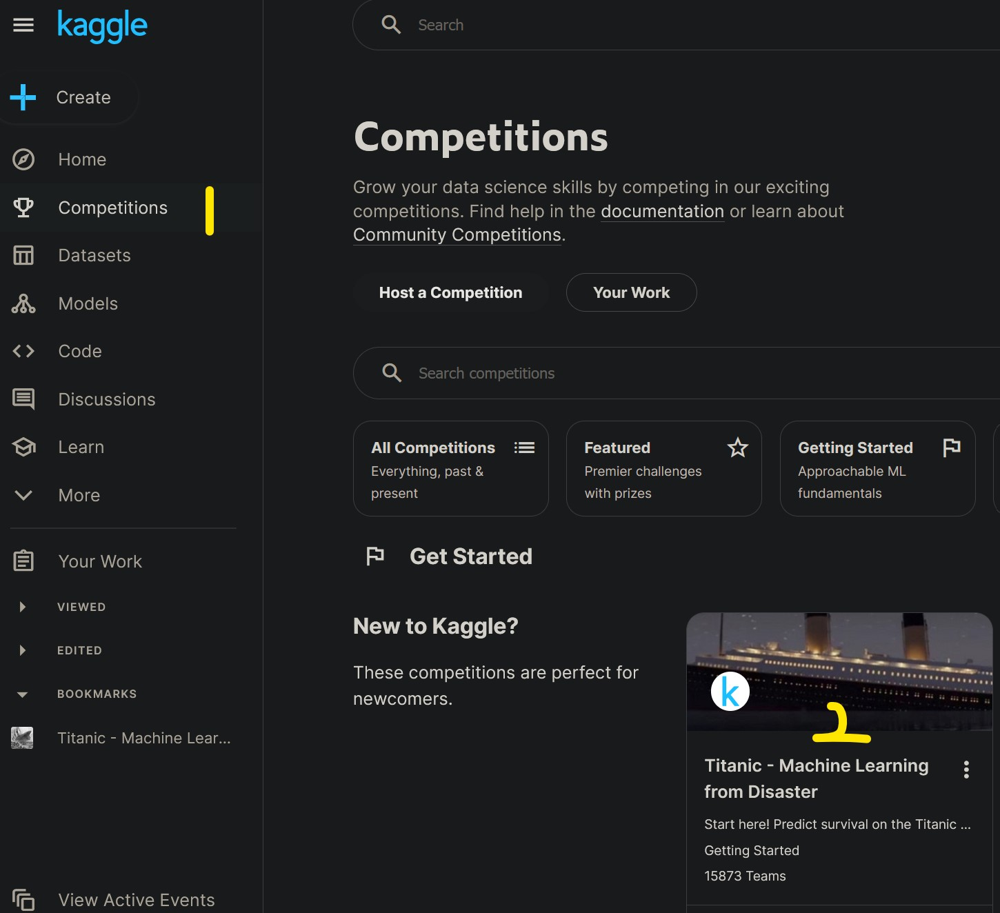 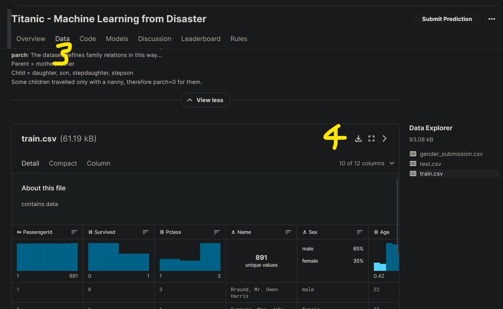
2. Clean Dataset
Each single passenger is represented by a single row with demographics and information across the columns.
For this first attempt, I’ll keep the model simple and used 8 columns and discarded the rest.
[Future Iteration]: Would using more columns increase my accuracy?
The training set should be used to build your machine learning models. For the training set, we provide the outcome (also known as the “ground truth”) for each passenger - Kaggle Data Description
Note: There are originally 891 Passengers (rows) in the training dataset.
There were a few steps taken to clean the data:
1. Keep Certain Columns Only:
- Survived
- Pclass - Sex - Age - SibSp - Parch - Fare - Embarked 2. Remove blanks from: - Sex (177 rows removed) - Embarked (2 rows removed) Columns: Remaining Passengers (712 = 891-177-2)
- Create a New Sheet and Copy over the editted Dataset
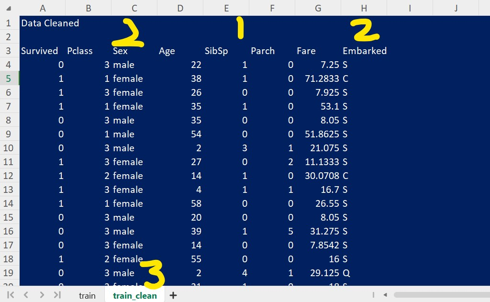
3. Binary Categorical Variables
Recall a Function has inputs and parameters. The output is calculated by adding the all the inputs which are weighted (multiplied) by the parameters.
In neural network basics: - the inputs were a single variable x and the output was a single y (or f(x)).
- the parameters (coefficients of x) could be optimised against a Loss Function (Mean Squared Error) to achieve a high accuracy (good predictability) for that function, called Gradient Descent - an arbitrary number of Rectified Linear Unit (ReLU) could be added together to form any function to fit a given set of data and parameter (weights) can be optimised to minimise the loss function as above with gradient descent.
Similarly, the inputs in the Titanic model will be the information describing the passengers, i.e. columns in our spreadsheet, are multiplied by the parameters (weights or coefficients) to represents its importance.
- Question: But how can a parameter (number) be multiplied to word (text) such as
maleorfemalefrom theSexColumn or LetterSorCorQfrom theEmbarkedColumn? - Answer: You Can’t.
However, Categorical Variables (unordered) can be converted into Binary Categorical Variables:
- IsMale will indicate a 1 for True (Male) and 0 for False (Female)
- Embarked has 3 categories “S, C and Q: Having two columns (S and C) to represent the 3 categories will suffice. If both S and C columns have 0’s, this implies it is a Q, so we do not need the extra column to have all the information.
- PClass (1, 2 and 3) also has 3 categories and is treated the same as above.
- Age and Fare are continuous values and left them as is for now
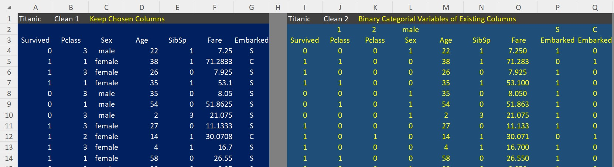
4. Regression
I created random variables (coefficients or weights for our parameters) with rand() and multiplied them to each parameter. I did this for several rows to and looked at the output.
Looks like Age and Fare columns are dominating our function.
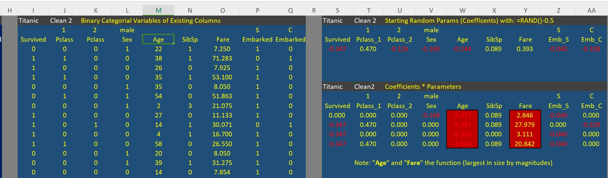
4.1 Dealing with Continuous Variables Age and Fare
Its probably fair (see what I did there) that a Passenger’s age (or fare) shouldn’t be the only two defining factors to determine their survivability as the above model suggests.
These values need to be normalised: - For Age, I divided each passengers age by the maximum age. - For Fare, I took the Logarithm of each passengers fare. Taking the Log of a variable where there are very small values and a few large ones distributes the values more evenly.
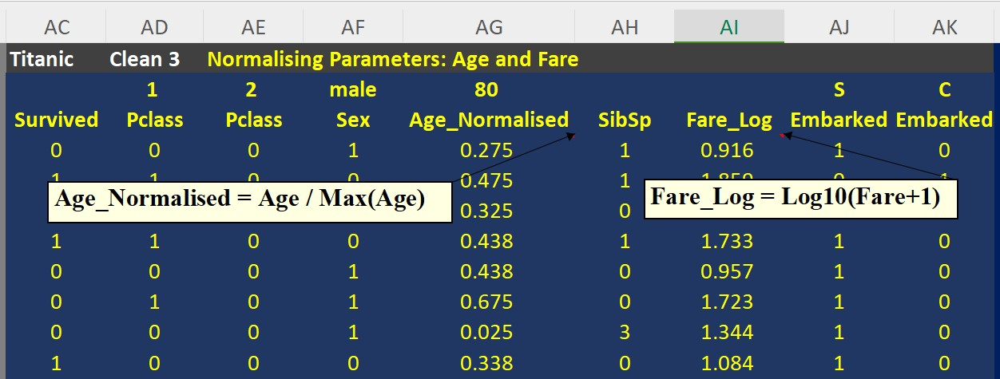
4.2 Prediction and Loss and Average Loss
Prediction: Multiply each parameter by the random coefficient created and sum it up to have our prediction.
- I used the SumProduct() function. - I also created a manual linear version from scratch to see test my understanding was correct and sumproduct was working as expected. It was.
Loss: It’s the survival (0 No, 1 Yes) minus the Prediction, then squared. - This is the squared error. If the errors are not squared, the errors end up cancelling each other off. Alternatively, the absolute errors could be taken done previously.
Average Loss: Self-explanatory.
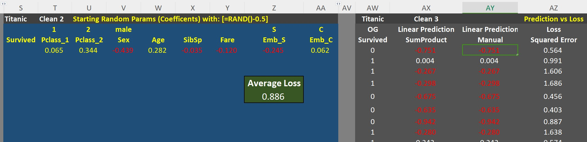
Note: Current Average Loss is 0.886 with random parameters.
4.3 Gradient Descent (or Solver)
Setting the Solver to Minimise our Average Loss, our parameters have been adjusted and Average Loss has come down to: 0.535!
Not but but this isn’t a neural net yet, its just a regression.
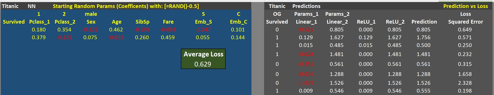
5. Neural Network
Params_2: Add another set of random coefficients.
Linear_2: Calculate the linear model on this set of coefficients.
ReLU: ReLUs are calculated with an IF() statement, if it is below zero, then set to zero, otherwise keep the value.
Prediction: Add the ReLUs.
Loss Prediction minus Survived.
Average Loss: Run Solver, but this time allow the change of both sets of coefficients Params_1 and Params_2
Note: Current Neural Network Average Loss is 0.527 with random parameters.
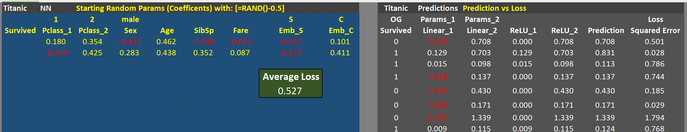
[Future Iteration]: To be honest, I haven’t quite understood fully whats going on here. The concept of adding a second set of parameters and then having two Linear Models and adding together their reLUs will give a prediction that can be optimised, just dont get it yet. be fair, I just learnt Gradient Descent a day or two ago.
5.1 Error In Optimisation - All ReLUs going to Zero
Having no constraints on whether coefficients can be negative or positive, the Solver found the most convenient result of making all parameters less than zero, hence making outputs a negative linear output, which makes all the ReLUs Zero, hence simply making the prediction that everyone died! A quick and dirty prediction thats not too bad but very scientific…
Note: I’m currently using WPS Solver rather than Excel Solver (Don’t own paid version of Excel). Not sure if I did a mistake in my model or its a Solver thing.
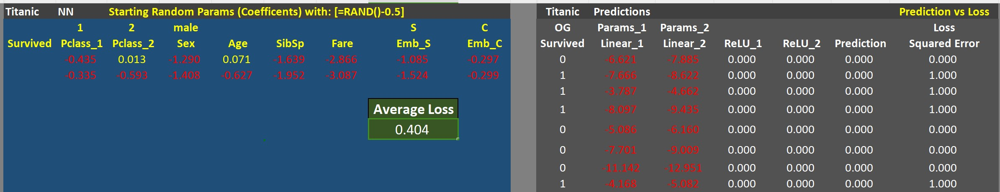
5.2 Setting Constraints (Coefficients > 0)
By placing the constraint the Solver seems to finally do what is expected.
The Average Loss has come down from the Regresssion 0.535 to 0.235!
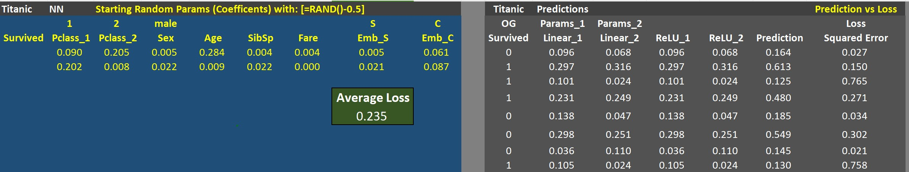
5.3 Added Ones Columns
But this didn’t fix the Solver Issuer.
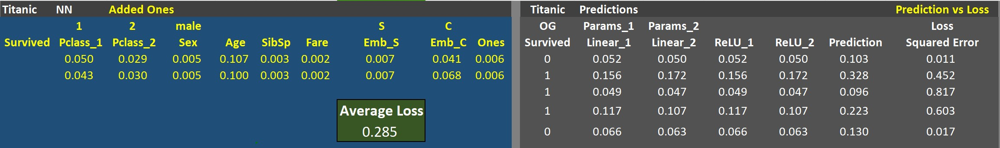
5.4 Matrix Multiplication
I made a Matrix Multiplication version and optimised with the same silly negative parameters solution
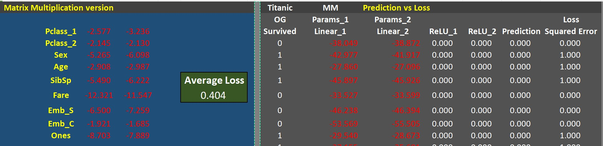
6. Mission Failed.
Having downloaded the spreadsheet from Jeremy and ran the Solver, the Zero ReLUs error persists. This is a WPS Sheets issue.
I also tried getting Solver on Google Sheets with no Luck however my emails permissions didn’t allow the install. Will give it a go to fix it next time.
For now, today I’ll admit defeat. Onwards to tomorrow…
I’ll upload this notebook anyway because I want to record my failures as well as my triumphs.